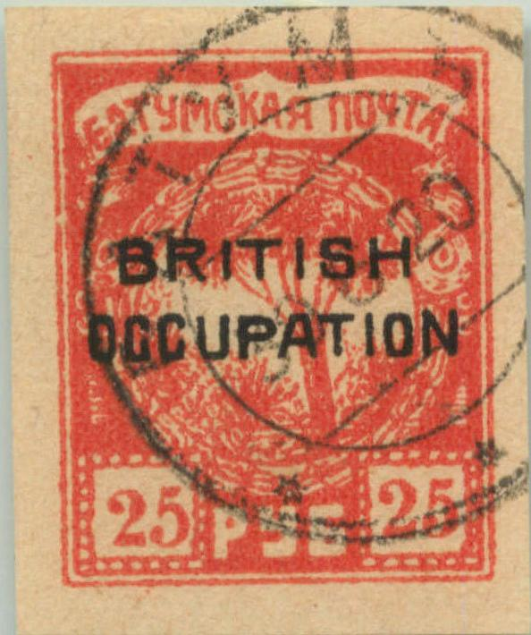
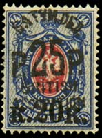
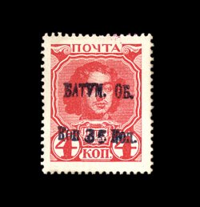

Presumably genuine
Batoum
Return To Catalogue - Batum, types of the tree issue
Note: on my website many of the
pictures can not be seen! They are of course present in the
catalogue;
contact me if you want to purchase it.
Presumably genuine
5 k green 10 k blue 50 k yellow 1 R brown 3 R lilac 5 R brown
Value of the stamps |
|||
vc = very common c = common * = not so common ** = uncommon |
*** = very uncommon R = rare RR = very rare RRR = extremely rare |
||
| Value | Unused | Used | Remarks |
| 5 k | * | * | |
| 10 k | * | * | |
| 50 k | * | * | |
| 1 R | * | * | |
| 3 R | ** | ** | |
| 5 R | ** | ** | |
Overprinted "BRITISH OCCUPATION"


In this overprint the top of the 'A' and the 'T' of 'OCCUPATION'
are almost touching.


The 1920 overprint has guidelines around each block of 6 stamps.
Reduced size
5 k green 10 k blue 25 k yellow 1 R blue 1 R brown 2 R red 2 R blue 3 R violet 3 R red 5 R brown 7 R red 7 R yellow 10 R green 15 R violet 25 R red 50 R blue
Value of the stamps |
|||
vc = very common c = common * = not so common ** = uncommon |
*** = very uncommon R = rare RR = very rare RRR = extremely rare |
||
| Value | Unused | Used | Remarks |
| 5 k | ** | ** | |
| 10 k | ** | ** | |
| 25 k | ** | ** | |
| 1 R blue | * | ** | |
| 1 R brown | * | * | 1920 |
| 2 R red | * | * | |
| 2 R blue | * | * | 1920 |
| 3 R violet | * | * | |
| 3 R red | * | * | 1920 |
| 5 R brown | * | * | 1920: dark brown |
| 7 R red | ** | ** | |
| 7 R yellow | * | ** | |
| 10 R | * | ** | |
| 15 R | * | ** | |
| 25 R | ** | ** | |
| 50 R | ** | *** | |
Surcharged and overprinted "BRITISH OCCUPATION"

25 R (black or blue) on 5 k green 25 R (black or blue) on 25 k yellow 50 R (black or blue) on 50 k yellow (with different "BRITISH OCCUPATION" overprint)
Value of the stamps |
|||
vc = very common c = common * = not so common ** = uncommon |
*** = very uncommon R = rare RR = very rare RRR = extremely rare |
||
| Value | Unused | Used | Remarks |
| 25 R on 5 k | R | R | Blue overprint: R |
| 25 R on 25 k | R | R | Blue overprint: RR |
| 50 R on 50 k | R | R | Blue overprint: RR |
(Forgeries)
Many forged stamps exist. In the book 'The forged stamps of all countries' by J.Dorn it is stated that the kopeck values should have 6 pearls over the square in the bottom right-hand corner (forgeries have 7 dots). The 1 Rubel should have 8 pearls in the bottom left-hand corner. In the 3 Rubel none of the letters are touching each other. Finally the 5 Rubel has the 'T' and 'Y' connected. See also http://www.firstissues.org/ficc/details/batum_1.shtml. More information can also be found at: http://bigblue1840-1940.blogspot.sg/2012/11/batum-and-aloe-tree-forgeries.html (this website takes a bit of study, but then it is very helpful).
(Genuine 5 kop)
(Forgery of the 1 R value, reduced size)


A forgery of the 10 k with 7 pearls above the lower right value
tablet. Also note that the branches of the tree are different and
that there is a white ellipse in the central design (some
distance above the "K" of "KOP" just inside
the central circular design). Next to it a 7 R stamp with the
same white ellipse. Note that in the overprint, the "A"
and "T" of "OCCUPATION" are not very close
together. The "S" of "BRITISH" appears
larger. The 3rd and 4th branches (i.e. the middle ones) are too
curved to the right in the Kopeck values.


The same forgery type, but for the Ruble values.
Zoom-in of the white ellipse (in the middle of the image). Note
the 'circle' above the "K" and the dot just next to the
upper right corner of the value tablet. In 'Philatelic Forgers,
their Lives and Works' by V.A.Tyler, such a forgery is shown and
said to have been sold by N.Imperato
of Genoa, Italy.


Different type of forgery of the kopeck values (second forgery
type), also with 7 pearls above the lower right value tablet. The
inverted "R" has its top part too broad, the last
"A" is too pointed on top. In this forgery type, the
3rd and 4th branches are also too much curved to the right. In
the lower value tablet, the second dot from above, in the upper
right corner has another dot just next to it (although genuine
stamps also have such a dot, but less prominent). It looks like
the 10 Kop is engraved?


The same forgery (sceond forgery type), but for the Ruble type.



Third type of forgery, only found with "BRITISH
OCCUPATION" overprint (a few very rare unoverprinted stamps
should exist?). The top of the "R" of this overprint is
too narrow (similar remarks for the "P") and the
"S" is too squarish.

Is this a third type forgery, without overprint? It has the
"P" of "KOP" too open, the middle branches
are almost detached from the bottom of the tree.

10 R on 1 k yellow (perf or imperf, 2 types of overprint) 10 R on 3 k red (perf or imperf, 2 types) 10 R on 5 k lilac (perforated, 2 types) 10 R on 7 k blue 10 R on 15 k lilac and blue 10 R on 10 on 7 k blue
Value of the stamps |
|||
vc = very common c = common * = not so common ** = uncommon |
*** = very uncommon R = rare RR = very rare RRR = extremely rare |
||
| Value | Unused | Used | Remarks |
| All values | R to RR | R to RR | 10 R on 3 k is the cheapest: R |
And overprint 'BRITISH OCCUPATION' in various colours





10 R on 3 k (overprint blue) 15 R on 1 k (overprint in red, violet or black) 25 R on 5 k 25 R on 10 on 7 k 25 R on 20 k on 14 k 25 R on 25 k 25 R on 50 k 50 R on 1 k 50 R on 2 k (overprint red) 50 R on 2 k (50 larger) 50 R on 2 k (50 larger, imperforated) 50 R on 3 k 50 R on 3 k (50 larger) 50 R on 3 k (50 larger and imperforated) 50 R on 4 k 50 R on 4 k (50 larger) 50 R on 4 k (50 larger and other type) 50 R on 5 k 50 R on 5 k (50 larger) 50 R on 5 k (50 larger and imperforated) 50 R on 10 k (overprint red, only 150 issued!) 50 R on 15 k
Value of the stamps |
|||
vc = very common c = common * = not so common ** = uncommon |
*** = very uncommon R = rare RR = very rare RRR = extremely rare |
||
| Value | Unused | Used | Remarks |
| All values | R to RRR | R to RRR | 10 R on 3 k is cheapest: R All others RR to RRR. |
Forged overprints exist, example:
(Forged overprint on a genuine stamp of Russia)
From 1923 on the stamps of the Transcaucasian federation were used.
Some extremely rare postal card surcharges, stamps originally affixed to postcards and additional surcharge:

The above two postal card surcharges are certified genuine.
(Reduced size)
I've seen the values 20 k green, 2 R lilac and 3 R red without overprint. I've also seen the values 30 k yellow and 10 R brown with "BRITISH OCCUPATION" overprint. Other values probably exist.
Another provisional overprint "BRITISH OCCUPATION 20
PYb." on 20 k green.

Different design, slightly larger and additional text around the
tree. In this design I have seen 1 R orange, 3 R green, 10 R red,
25 R brown.
Stamps - Timbres-poste - Briefmarken

{kind=link}
{kind=link}